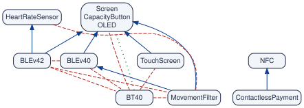
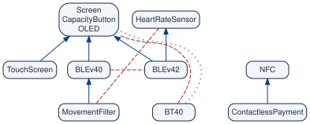

A variability model lists the features that a configurable system offers and the constraints among them. Constraints combine: if a feature requires a second one, and the second excludes a third, then the first also excludes the third, although nobody wrote so. In large models, most relationships between features are written nowhere, yet engineers who plan changes, review models, validate configurations or test releases depend on them.
variplex makes these relationships explicit, in two steps:
- It builds the graphs. variplex compiles a model, once, into graphs of its strong relationships: every relationship between two features that holds in all the valid configurations, written in the model or not.
- It analyses the graphs. More than a hundred functions answer the questions that engineers ask about a model, from one feature to the whole model and its versions, without calling a solver again. Every function returns a tibble.
What the graphs are
For two features A and B of a model, variplex finds three kinds of strong relationships, each a graph:
| Graph | Link | Meaning |
|---|---|---|
| requires | A → B | every valid configuration with A also has B |
| excludes | A — B | no valid configuration has both A and B |
| at least one | A ⋯ B | no valid configuration lacks both |
The nodes are the variable features, those in some valid configurations and not in others. Core features, in every configuration, and dead ones, in none, are reported apart; abstract features, which only name groups of the tree, are left out.
Take the Mi Band 3, a fitness band that comes with the package. Its feature model is a tree with five cross-tree constraints; it has 8 core features and 11 variable ones. Its graphs have 21 dependencies, 10 conflicts and 3 at-least-one links, and only 11 of these 34 links are written in the model as a tree edge, a group or a constraint between two features. The others arise as constraints combine. For instance, every band with Bluetooth 4.2 has a heart-rate sensor, yet no constraint says so: it follows from a constraint over three features, the Bluetooth group and a constraint on a fourth one.

The graphs of the Mi Band 3: requires (blue arrows), excludes (red dashes) and at least one (green dots). Screen, OLED and CapacityButton, always selected together, are one node.
Because each link joins just two features, the graphs are plain graphs, which pays off twice:
- Engineers can read them. Each link is one simple fact that can be drawn and checked against the requirements. The readings are immediate: Screen, OLED and CapacityButton are the most required features; BT40 is the most incompatible, excluding 7 features; MovementFilter forces 4 features and forbids 3.
-
Graph algorithms apply to them. Centrality finds the features on which most others depend, communities the parts of a model that separate teams could configure, and paths explain why two features cannot go together. Unlike a drawing, these analyses scale to models with thousands of features, such as the Kconfig models of Linux.
vp_igraph()hands the graphs to igraph for any other algorithm.
The graphs are synthesized once using a SAT solver and an auxiliary graph called Modal Implication Graph (MIG), which takes seconds to minutes even on the largest models. The model can be a feature model in UVL, or the Boolean formula (DIMACS) of a model written in any other notation, such as the Kconfig files of the Linux kernel translated by KMax, KConfigReader or KconfigSampler.
What the graphs answer
Once the graphs are built, most questions become lookups or classic graph algorithms. Four everyday engineering tasks show the idea:
| Task | Question | Functions |
|---|---|---|
| Impact analysis | What does selecting or removing a feature force and forbid? |
vp_consequences(), vp_requirements(), vp_conflicts_of()
|
| Model review | From which few relationships do all the others follow? Why does a dependency or conflict hold? |
vp_minimal(), vp_explain_requires(), vp_explain_conflict()
|
| Configuration validation | Can these decisions go together? If not, why? |
vp_partial_configuration(), vp_can_go_together()
|
| Release and test management | What did a release change in meaning, not just in text? Which pairs of features must be retested? |
vp_compare(), vp_changed_links(), vp_edit_type()
|
Beyond them, the functions cover the measures of each feature, the layers and hierarchy of a model, the whole model, conflicts, configuration and teams, combinatorial testing, network patterns, and the evolution of a model through its versions. vp_functions() lists them by topic.
Installation
install.packages("variplex")Nothing has to be installed outside R. To draw the graphs, install also the suggested packages DiagrammeR (and DiagrammeRsvg and rsvg to save drawings as SVG, PDF or PNG). The development version is on GitHub:
# install.packages("pak")
pak::pak("rheradio/variplex")Example
Build the graphs of the Mi Band 3:
library(variplex)
band <- vp_generate(vp_example("miband3_realized.uvl"), or_graph = TRUE)
band
#> variplex model "miband3_realized"
#> features: 11 variable (the nodes of the graphs), 8 core, 0 dead
#> requires: 21 arrows excludes: 10 lines
#> at least one: 3 lines
#> atomic sets: 1 (of two or more features)Impact analysis. A cheaper band without a screen is planned. What does it touch? Besides the features under the screen in the tree, it loses both versions of Bluetooth Low Energy, and must use classic Bluetooth:
vp_consequences(band, deselected = "Screen")
#> # A tibble: 8 x 3
#> feature value forced_by
#> <chr> <chr> <chr>
#> 1 Screen left out not Screen
#> 2 TouchScreen left out not Screen
#> 3 OLED left out not Screen
#> 4 CapacityButton left out not Screen
#> 5 MovementFilter left out not Screen
#> 6 BLEv40 left out not Screen
#> 7 BLEv42 left out not Screen
#> 8 BT40 selected not ScreenModel review. The minimal form keeps the few links from which all the others follow, each through a path, so that a review can start from them; the explanations trace any link back to them:
vp_minimal(band)
#> variplex model "miband3_realized"
#> features: 9 variable (the nodes of the graphs), 8 core, 0 dead
#> requires: 6 arrows excludes: 3 lines
#> at least one: 1 lines
#> minimal form: skeleton, primitive conflicts and primitive at-least-one lines;
#> each atomic set is one node (1 sets)
vp_explain_conflict(band, "MovementFilter", "BT40")
#> # A tibble: 3 x 5
#> origin step from link to
#> <int> <int> <chr> <chr> <chr>
#> 1 1 1 MovementFilter requires BLEv40
#> 2 1 2 BLEv40 requires Screen
#> 3 1 3 Screen excludes BT40
Configuration validation. A customer orders a band with a movement filter and Bluetooth 4.2. It cannot be built, and the graphs say why:
vp_can_go_together(band, list(c("MovementFilter", "BLEv42")))$reasons
#> [1] "MovementFilter excludes BLEv42 (which brings HeartRateSensor); MovementFilter (which brings BLEv40) excludes BLEv42"Release and test management. The model planned before the release had fewer constraints than the released one. The release only gained links, so it restricted the model; each gained link rules out a pair of decisions, so those pairs no longer need testing:
planned <- vp_generate(vp_example("miband3_planned.uvl"), or_graph = TRUE)
vp_compare(planned, band)
#> # A tibble: 3 x 10
#> graph kept added removed old_links new_links gained lost jaccard spearman
#> <chr> <int> <int> <int> <int> <int> <int> <int> <dbl> <dbl>
#> 1 requires 11 0 0 10 21 11 0 0.476 0.867
#> 2 excludes 11 0 0 3 10 7 0 0.3 NA
#> 3 atleastone 11 0 0 0 3 3 0 0 NA
vp_plot(band) # draw the graphs, with DiagrammeRHow far the graphs can be trusted
The graphs know everything that can be said about pairs of features, and nothing more:
- Every answer about one or two features (is it core? does A require B? can A and B go together?) is exact.
- When a question involves more features, such as whether a partial configuration can be completed, a “no” is always right, and it comes with its cause.
- A “yes” can be wrong, though rarely: a rule that ties three or more features at once without forcing anything on any two of them is in no graph. If a battery cannot power NFC, the heart-rate sensor and the touch screen at once, the graphs stay the same, and they accept the three together.
vignette("limits-theory") proves these guarantees and measures how often a “yes” is wrong on real models.
Documentation
Start with vignette("variplex"). The other vignettes go through the results (vignette("graphs")) and every question the graphs answer, topic by topic; vp_functions() lists the functions by topic.
Citation
citation("variplex"). The dataset of graphs of 5,709 variability models is at https://doi.org/10.5281/zenodo.17277788.